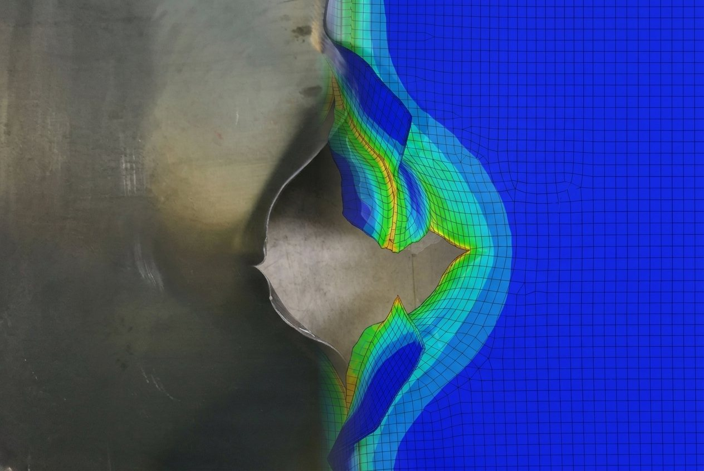
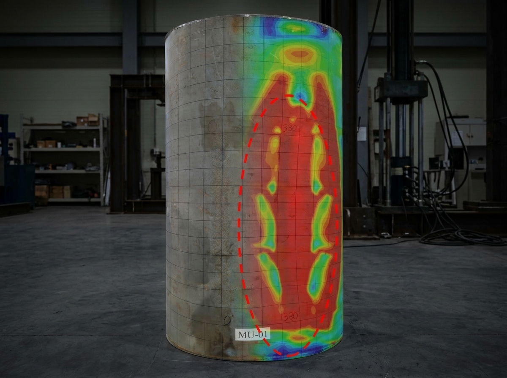
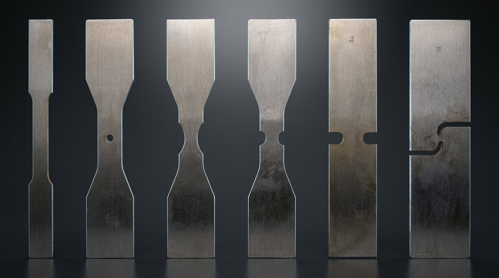
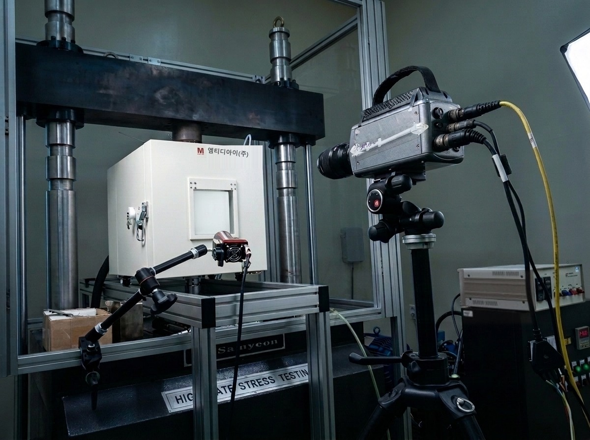

01Thrust 1 · Phase 1 Foundation
Structural integrity under extreme conditions
극한 환경 구조 건전성 평가
How marine steels and structures deform, fracture and fatigue under impact, cryogenic temperature and hydrogen, and how to carry that into full-scale design assessment.
- Material database: quasi-static, high-strain-rate, cryogenic and hydrogen-charged tests of ship, pipeline and tank steels
- Ductile fracture and fatigue constitutive models implemented in nonlinear finite element analysis
- Collision, grounding, punching and ultimate strength of ship and offshore structures
- Subsea and offshore components: hydrogen pipelines, pressure hulls, risers and moorings
ductile fracturenonlinear FEAcryogenichydrogen embrittlementlow-cycle fatigue



